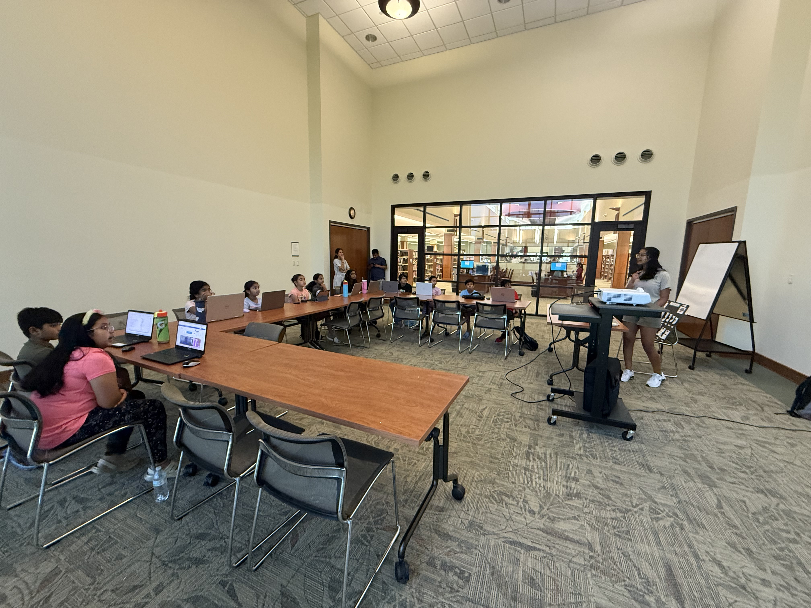

During the summer of 2025, F.B.N.F. hosted a three-day CAD workshop to share its knowledge of Onshape,
a cloud-based 3D design software. We wanted to give younger students the chance to experience how ideas
can be turned into real 3D models.
We first introduced CAD and its various applications to the students since many of them were unfamiliar
with this tool, as well as how our team utilized it this past season. Over the course of the sessions,
students learned how to move from simple sketches to full 3D designs. We began with the basics, like
sketching and extruding, and then moved on to more difficult features such as revolve, fillets, chamfers,
and patterning. By the final day, the students were ready for a more complex challenge: designing and
assembling a car wheel. Along the way, they created everything from LEGO pieces and nameplates to their
own original designs, many of which they were eager to share with peers.
Running the workshop wasn’t without challenges. On the first day, it was difficult for students to
understand the idea of creating a 3D figure from a 2D surface. We had to adapt our teaching strategies,
like comparing the revolve feature to making a donut. Once they reached the point of creating full 3D objects,
their enthusiasm increased. They became more engaged, asked questions, and explored the various tools in creative ways.
Looking back, the workshop provided valuable exposure to skills that are rarely taught at a young age. By introducing
it early, we not only gave them a head start in utilizing this tool, but we also sparked interest in problem-solving
and design. For the team, it was a chance to practice teaching students with various levels of experience and interest.
We also saw areas to improve after students had some difficulty on the first day. Using items like Play-Doh or bringing
in simple objects could have helped students better visualize 3D concepts instead of relying on their imagination across
three planes.
But most importantly, we learned that teaching CAD in the community fills a real gap in opportunity. While most of the
members on our team are self-taught or learned through a course in high school, these students are able to learn about
CAD starting from elementary school. Hosting more workshops like this in the future could make computer-aided design feel
less intimidating and more accessible while also inspiring curiosity and creativity in students from an early age.

 | Apr 13, 2025
| Apr 13, 2025